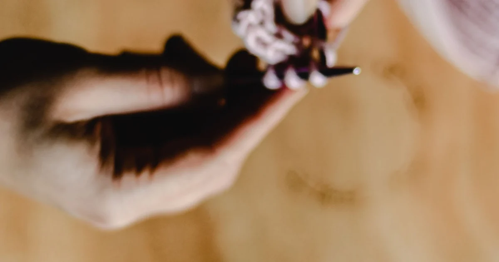

Crochet Basics · Beginner guide
How to Read Basic Crochet Pattern Abbreviations
Decode common crochet abbreviations by checking the pattern’s stitch key and terminology first.

Abbreviations save space, but they are not a universal language. A pattern’s notes take precedence, and the same letters can mean different stitches across regions.
Before you begin
Read the materials, special-stitch notes, and abbreviations before starting. Confirm whether the pattern uses US terms; US “dc” differs from UK “dc.”
Step-by-step instructions
- Find the stitch key and note unfamiliar terms before beginning the row.
- Separate stitch names from instructions: “sc” names a US single crochet, while “ch” tells you to chain.
- Read repeat punctuation as part of the instruction. Brackets and asterisks can be defined differently by different patterns.
- Work one row slowly and compare its stitch count with the stated total.
What to check
Pattern notes outrank memory
If an abbreviation is missing, do not guess from another pattern. Check the designer’s notes or publisher and keep a short list of definitions beside your work.
Frequently asked questions
Does “dc” always mean double crochet?
No. In US terminology it means double crochet; in UK terminology it means treble crochet.
What does an asterisk mean?
It marks a repeat in many patterns, but the repeat’s endpoint and number of times vary. Follow the exact wording.